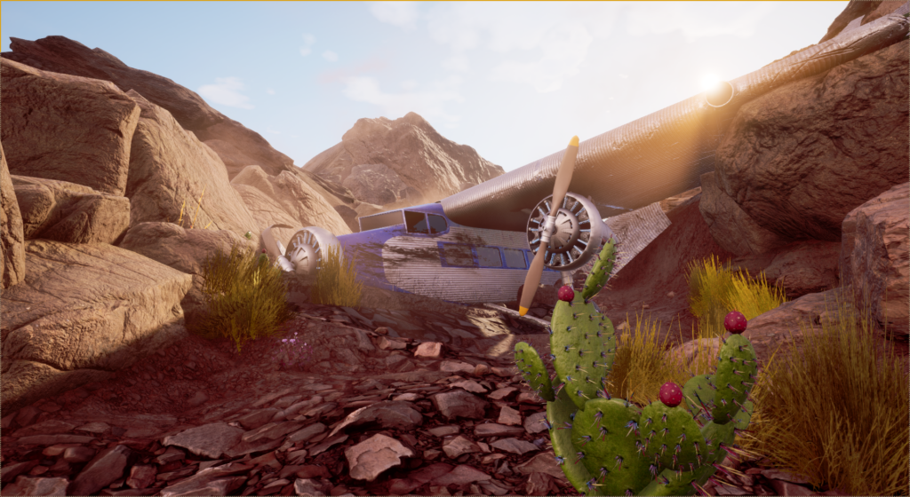
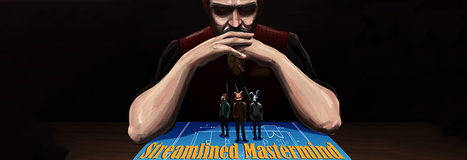
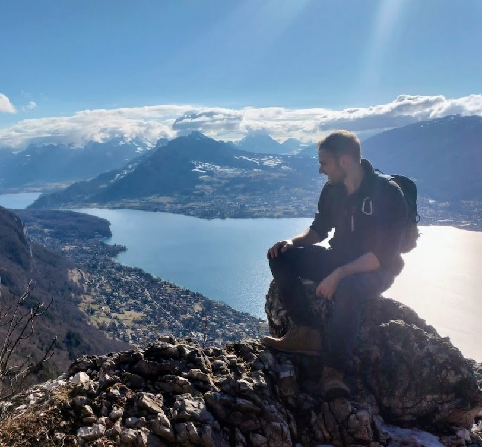

Imagery · warm game worlds + cool photography

game · warm, cinematic, full-bleed

protect text w/ bottom gradient

Portraits crop to a circle; keep images color-rich, never desaturate to grayscale.